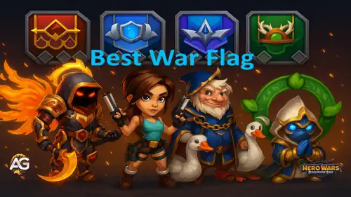

Em Hero Wars: Dominion Era, as Bandeiras de Guerra são mais do que simples símbolos são ferramentas poderosas para melhorar o desempenho da sua equipe em batalhas e explorações. Mas com seis tipos diferentes disponíveis, quais realmente se destacam? Seja enfrentando arenas PvP ou explorando aventuras intensas, este guia vai te ajudar a escolher as melhores Bandeiras de Guerra para apoiar seus heróis e mascotes. Prepare-se para maximizar o potencial da sua equipe!
Atualmente, temos seis Bandeiras de Guerra únicas, cada uma oferecendo bônus especiais que fortalecem toda a equipe não apenas um herói. Desde melhorias nas habilidades do grupo até o desbloqueio de habilidades poderosas, essas bandeiras desempenham um papel essencial em estratégias de PvP de alto nível e aventuras. Neste guia, vamos explorar quais Bandeiras de Guerra oferecem o melhor desempenho e explicar o que torna cada uma valiosa.
Cada Bandeira de Guerra possui até 3 espaços de padrão que podem ser personalizados com atributos adicionais como Ataque Mágico, Defesa Mágica, Ataque Físico, Armadura, Penetração de Armadura, Penetração Mágica ou até Redução de Evasão. Dominar esses padrões permite ajustar sua estratégia e dar à sua equipe uma vantagem crucial em cada batalha.

Melhor Bandeira de Guerra em Hero Wars: Dominion Era, um jogo desenvolvido pela Nexters.
Quer saber onde encontrar uma Bandeira de Guerra todo mês? Confira nosso Guia da Ilha Misteriosa no Alexandre Games. Oferecemos dicas mensais para ajudar jogadores F2P a localizar Bandeiras de Guerra durante o evento da Ilha Misteriosa.
Personalize sua Bandeira de Guerra com padrões poderosos e equipe seus heróis para liberar todo o potencial deles. Vamos mergulhar nas melhores Bandeiras de Guerra de Hero Wars: Dominion Era!
Melhores Bandeiras de Guerra para Impacto em Equipe em Hero Wars: Dominion Era
Nem todas as Bandeiras de Guerra são criadas iguais. Algumas oferecem bônus universais poderosos que aumentam o desempenho de toda a equipe, tanto no PvP quanto no PvE. Abaixo está nosso ranking das melhores Bandeiras de Guerra, com base na sinergia, aprimoramento de habilidades e utilidade nas composições mais relevantes do meta atual.
1. Bandeira de Guerra da Força dos Mascotes:
Aumenta o Poder das Habilidades dos Mascotes em 10%, tornando as habilidades baseadas em mascotes significativamente mais fortes.
Axel, Khorus e Benefícios para a Equipe: Uma das bandeiras mais poderosas no geral. Axel recebe mais cura e poder de escudo das Bolhas da Justiça. Khorus melhora sua Aura de Resistência, tornando os escudos mais duráveis e aumentando a chance de bloquear efeitos negativos. Essencial para composições baseadas em mascotes.
2. Bandeira de Guerra da Recuperação:
Aumenta toda a cura realizada pelos seus heróis em 10% perfeita para equipes focadas em sustentação.
Guus, Martha, Thea, Celeste e Benefícios para a Equipe: Ideal para defesa no PvP e lutas longas. Com curandeiros do meta como Guus, Thea e Martha, essa bandeira amplifica a cura, criando formações difíceis de derrotar.
3. Bandeira de Guerra da Geada:
A cada 18 segundos, lança Geada em todos os inimigos, reduzindo o nível de suas habilidades em 2 por 8 segundos.
Benefício para a Equipe: Reduzir o nível das habilidades dos inimigos enfraquece seu dano, controle e cura. Excelente para atrapalhar estratégias inimigas, especialmente em batalhas longas no PvP ou contra equipes totalmente evoluídas.
4. Bandeira de Guerra dos Guerreiros Ágeis:
Reduz o tempo de recarga das habilidades de heróis Guerreiros em 5% e acelera seus ataques básicos.
Ishmael, Lyria, Arachne, Qing Mao e Benefícios para a Equipe: Muito útil para equipes com muitos guerreiros. Ataques básicos mais rápidos ajudam a gerar energia com mais agilidade. Embora nem todas as habilidades dos guerreiros se beneficiem diretamente da redução de recarga (por exemplo, Yasmine), essa bandeira acelera o carregamento das habilidades finais e aumenta o potencial de combos.
5. Bandeira de Guerra da Queda:
Reduz a cura recebida por todos os inimigos em 10%.
Benefício contra Curadores: Uma escolha decente contra equipes com muita cura, mas muitas vezes ofuscada por heróis como Celeste ou mascotes como Biscuit, que já reduzem a cura. Funciona melhor em sinergia com essas unidades do que sozinha.
6. Bandeira de Guerra do Ardor:
Aumenta em 10% o ganho de energia de todos os Tanques, ajudando-os a usar habilidades com mais frequência.
Rufus, Aurora, Galahad e Benefícios para Tanques: Forte para composições clássicas de tanques, mas menos útil no meta atual, onde guerreiros como Dante ou Lyria frequentemente ocupam a posição de tanque. Ainda assim, é excelente se você estiver montando uma equipe centrada em tanques dedicados.
Melhores Padrões de Bandeiras de Guerra e o Que Priorizar
Escolher os Padrões certos para sua Bandeira de Guerra pode elevar o desempenho da sua equipe no PvP e PvE. Cada Padrão adiciona bônus permanentes de atributos, e combinar os efeitos certos pode aumentar significativamente sua taxa de vitórias. Abaixo está uma análise completa de todos os Padrões disponíveis e quais oferecem maior valor estratégico.
🛡️ Armadura: Este padrão reduz o dano físico recebido, sendo extremamente valioso contra heróis como Dante, Ishmael e Qing Mao. Padrões de Armadura de alto nível podem bloquear mais de 50% do dano físico recebido. Uma escolha excelente para formações defensivas e para proteger heróis frágeis na retaguarda.
🗡️ Ataque Físico: Aumenta diretamente o dano causado por guerreiros e atiradores. Útil para heróis como Lara Croft, Qing Mao, Ishmael e Galahad. Escolha este padrão se sua equipe depende fortemente de pressão física constante.
✨ Ataque Mágico: Potencializa o dano causado por magos. Perfeito para equipes centradas em Aidan, Augustus, Iris, ou Heidi. Forte contra equipes inimigas com foco físico e ideal para dano mágico de alto impacto.
🔥 Penetração Mágica: Aumenta a capacidade dos ataques mágicos de ignorar a Defesa Mágica inimiga. Funciona muito bem com heróis cujo dano escala com Ataque Mágico e enfrentam oponentes com alta resistência. Sinergia ideal com Polaris, Iris e Orion.
⚔️ Penetração de Armadura: Semelhante à Penetração Mágica, este atributo permite que o dano físico ignore parte da Armadura inimiga. Essencial para heróis físicos de alto DPS como Dante, Yasmine ou Keira, garantindo que o dano atinja seu potencial máximo.
🎯 Redução de Esquiva do Inimigo: Reduz o atributo de esquiva da equipe inimiga, ajudando equipes físicas a acertarem golpes com mais consistência. Extremamente eficaz contra heróis evasivos como Dante, anulando estratégias baseadas em esquiva.
🌀 Defesa Mágica: Oferece resistência contra dano mágico recebido. Embora mais situacional, pode ser útil contra equipes com muitos magos. Priorize apenas se você enfrentar frequentemente equipes lideradas por magos fortes como Iris ou Krista.
🚫 Redução de Chance de Crítico do Inimigo: Reduz a chance de os inimigos causarem golpes críticos. Uma opção defensiva útil contra equipes com alto foco em dano crítico, como Ishmael ou Jhu. Especialmente eficaz para proteger unidades frágeis de suporte ou controle.
Ranking de Prioridade dos Padrões
Armadura – Melhor defesa geral contra equipes físicas. Crucial no meta atual do PvP.
Ataque Físico – Forte em equipes centradas em guerreiros, especialmente com DPS constante.
Ataque Mágico – Amplifica o dano dos seus magos principais. Alta sinergia e consistência.
Penetração de Armadura – Essencial para heróis físicos carry superarem defesas.
Penetração Mágica – Rompe defesas mágicas; fundamental em formações full mago.
Redução de Esquiva do Inimigo – Excelente contra Dante e equipes focadas em esquiva.
Defesa Mágica – Baixa prioridade, útil apenas contra equipes dominadas por magos.
Redução de Crítico do Inimigo – Niche, mas valiosa contra equipes com burst crítico.
Como Melhorar os Padrões da Bandeira de Guerra
Para evoluir seus Padrões, você precisará de dois do mesmo nível e um recurso chamado Fio Dourado. Cada estágio de melhoria exige mais materiais, e a fusão dos padrões segue uma progressão específica. Veja abaixo um resumo do custo por nível:
Padrão Verde: 2x Cinza + 150 Fio Dourado
Padrão Azul: 2x Verde + 300 Fio Dourado
Padrão Violeta: 2x Azul + 600 Fio Dourado
Padrão Laranja: 2x Violeta + 750 Fio Dourado
Padrão Vermelho: 2x Laranja + 1500 Fio Dourado
Padrão Vermelho Supremo: 3750 Fio Dourado (sem fusão necessária)
Os Padrões Vermelhos Supremos são especiais porque não exigem padrões de níveis anteriores para serem criados. Você também pode re-rolá-los quantas vezes quiser por 3750 Fios Dourados cada, permitindo buscar o atributo perfeito para sua composição de equipe.
Melhorando os Padrões
Os padrões evoluem por sete níveis de aprimoramento — Branco → Verde → Azul → Violeta → Laranja → Vermelho → Supremo — com cada etapa oferecendo um bônus mais poderoso. Abaixo está uma comparação completa de todos os tipos de atributos e como seus valores escalam com os upgrades.
Redução de Chance Crítica do Inimigo Reduz a chance de acertos críticos do inimigo
+1% → +3% → +5% → +8% → +11% → +15% → +16,5–22%
Conclusão: Dominando as Bandeiras de Guerra e seus Padrões
As Bandeiras de Guerra e seus Padrões são ferramentas poderosas que podem moldar completamente seu sucesso em Hero Wars: Dominion Era. Ao escolher a bandeira certa e personalizá-la com combinações inteligentes de padrões, você pode amplificar os pontos fortes da equipe, compensar fraquezas e ganhar vantagem no PvP e nas Aventuras. Seja focando em sinergia com mascotes, fortalecendo seus magos ou neutralizando equipes evasivas, cada escolha é importante.
Foque em melhorar o núcleo da sua estratégia sustentação, dano ou controle e evolua seus padrões com sabedoria usando Fio Dourado. A cada melhoria, sua equipe se torna mais eficiente, resistente e perigosa. A configuração certa pode ser a diferença entre uma derrota apertada e uma vitória decisiva.
Você gostou do nosso Guia da Melhor Bandeira de Guerra para Hero Wars Web e Facebook? Há algo que não entendeu ou gostaria de sugerir mudanças? Convidamos você a se juntar à nossa sessão de comentários na página do Alexandre Games Blog. Não hesite em expressar sua opinião, clarificar suas dúvidas e compartilhar sua sugestões. Clique no botão abaixo para começar:


 Hero Wars: Dominion Era – Guias de Personagens - Domine com Cada Herói
Hero Wars: Dominion Era – Guias de Personagens - Domine com Cada Herói
 Guia Completo de Mascotes para Hero Wars: Dominion Era
Guia Completo de Mascotes para Hero Wars: Dominion Era
 Hero Wars: Dominion Era – Tier List 2025 com os Melhores Heróis
Hero Wars: Dominion Era – Tier List 2025 com os Melhores Heróis
 Guia Completo dos Mapas de Aventura de Mascotes – Hero Wars: Dominion Era
Guia Completo dos Mapas de Aventura de Mascotes – Hero Wars: Dominion Era
 Como Ativar Recompensas de Códigos Promocionais em Hero Wars: Dominion Era 2025
Como Ativar Recompensas de Códigos Promocionais em Hero Wars: Dominion Era 2025